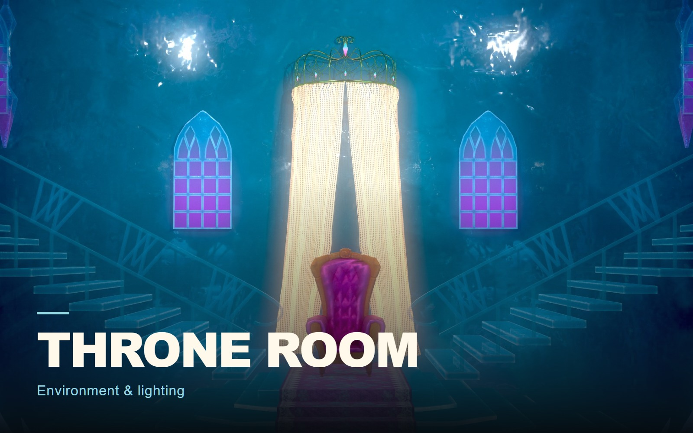

Environments
Throne Room
A study in light and atmosphere.

THE PROJECT
A stylized throne-room scene with cool atmospheric light and a warm focal point.
- MY CONTRIBUTION / FOCUS
- Environment presentation
Environment presentation from the supplied archive.
PROCESS & DESIGN
Guiding the eye toward the throne.
The composition uses bilateral staircases and a central shaft of light to frame the throne. Cool surrounding tones contrast with the central seat.
Composition
The paired staircases and central shaft of light frame the seat.
Color contrast
Cool blue surroundings and the warmer central throne establish the focal point.